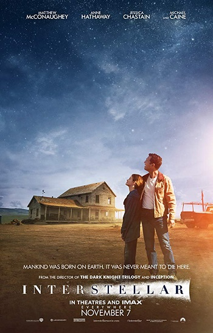

🎬1. The Shawshank Redemption
แนว: ดราม่า / มิตรภาพ / ความหวัง
คะแนนรีวิว: 🌟🌟🌟🌟🌟 (5/5)
“คนบางคนอยู่ในคุกได้ แต่จิตใจเป็นอิสระ... ขณะที่บางคนอยู่ข้างนอก แต่กลับถูกกักขังในใจตัวเอง”
Andy Dufresne ชายที่ถูกตัดสินว่าฆ่าภรรยา ทั้งที่เขาอาจไม่ได้ทำ พร้อมเล่าเรื่องผ่านสายตาของเพื่อนนักโทษ “Red” สิ่งที่ทำให้หนังเรื่องนี้ยิ่งใหญ่ไม่ใช่ฉากหลบหนีสุดเท่ แต่คือพลังแห่งความหวัง ความอดทน และการไม่ยอมแพ้แม้ในวันที่มืดมนที่สุด
✅ ควรดูเพราะ: เป็นหนังที่ "ปลุกใจ" อาจเปลี่ยนมุมมองคุณตลอดไป
✨ คลิกที่โปสเตอร์ แล้วเตรียมพบกับความสนุก!

🍿 2. Forrest Gump (1994)
แนว: ดราม่า / คอมเมดี้ / ชีวิต
คะแนนรีวิว: 🌟🌟🌟🌟⭐ (4.5/5)
“ชีวิตก็เหมือนกล่องช็อกโกแลต…คุณไม่มีวันรู้หรอกว่าจะได้อะไร”
เรื่องราวของ “Forrest Gump” ชายหนุ่มผู้มี IQ ต่ำกว่าคนทั่วไป แต่กลับใช้ชีวิตได้อย่างเต็มที่ วิ่งข้ามประเทศ ตกปลา สู้สงคราม และกลายเป็นส่วนหนึ่งในเหตุการณ์สำคัญในประวัติศาสตร์สหรัฐฯ ด้วยความซื่อสัตย์และจริงใจล้วนๆ
✅ ควรดูเพราะ: หนังอบอุ่นหัวใจ มีกลิ่นของชีวิตจริงและแรงบันดาลใจเต็มเปี่ยม
👇 คลิกโปสเตอร์ ดูหนังได้เลย!

🛸 3. Interstellar (2014)
แนว: ไซไฟ / ดราม่า / พ่อ-ลูก
คะแนนรีวิว: 🌟🌟🌟🌟🌟 (5/5)
“ความรักอาจเป็นสิ่งเดียวที่ข้ามผ่านมิติของกาลเวลาได้”
หนังไซไฟที่ดูแล้วไม่ใช่แค่ตื่นตา แต่ยังตื่นใจและตื่นความคิด เรื่องของนักบินอวกาศที่เดินทางผ่านหลุมดำเพื่อค้นหาบ้านใหม่ให้มนุษยชาติ แต่สิ่งที่ยิ่งใหญ่ที่สุดในหนังเรื่องนี้ไม่ใช่เทคโนโลยี — คือ "ความรัก" ของพ่อที่มีต่อลูก
✅ ควรดูเพราะ: เป็นหนังที่ผสมความรู้วิทยาศาสตร์เข้ากับอารมณ์มนุษย์อย่างลึกซึ้ง แถมภาพสวย เพลงประกอบขนลุก!
🎬 คลิกที่โปสเตอร์เพื่อดูหนังเรื่องนี้!
